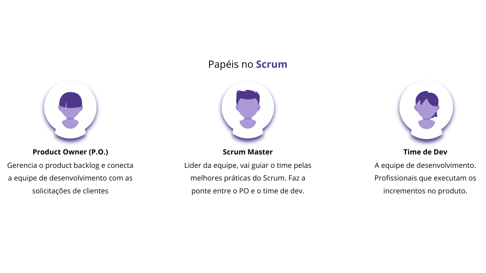

4ª Trilha: Missões no scrum: Backlogs
Tipos de backlog:
2. Sprint Backlog:

Uma lista de tarefas que o Scrum Team se compromete a fazer em um sprint. Os itens do Sprint Backlog
são extraídos do Product Backlog, o time define quais itens serão trabalhados durante o Sprint
Planning Meeting, criando um plano para entregar o incremento de produto “Pronto” ao final da
sprint.
Sprint backlog é uma ferramenta que ajuda a organizar as tarefas e a aumentar a produtividade da
equipe, permitindo a conclusão mais rápida do projeto. A sprint é o período limitado (até 1 mês) no
qual o time trabalha nos itens do backlog selecionados.
Durante a sprint, ocorrem reuniões diárias com duração máxima de 15 minutos. Nessas reuniões, cada
membro da equipe compartilha o que foi realizado no dia anterior, o que está planejado para o dia e
qualquer impedimento encontrado. Ao final da sprint, é essencial revisar o que deve ser mantido, o
que pode ser aprimorado e o que deve ser descartado.
O objetivo de cada sprint é entregar um produto que possa ser usado, ou seja, algo que é testado,
inspecionado e que poderia ser entregue ao usuário final, ao final de cada sprint.
Ao final da sprint, o time revisa o que foi realizado e identifica melhorias para as próximas
sprints. A 'sprint backlog review' é uma previsão do que será entregue no próximo incremento,
garantindo que a equipe se mantenha focada e alinhada com os objetivos do projeto.
O Scrum Master é responsável por manter o Sprint Backlog atualizado durante o sprint, registrando as
tarefas concluídas e o tempo restante para as que ainda não estão prontas.